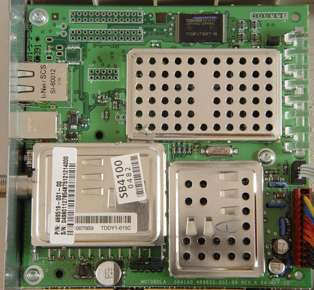

Figure 1: Interior of my Motorola SURFboard SB4100 cable modem shows careful attention to RF detail. The arrays of holes near the top of the board connect to external devices during development and manufacturing test. They also provide entry points for unauthorized use after the retail sale.
Back to Article